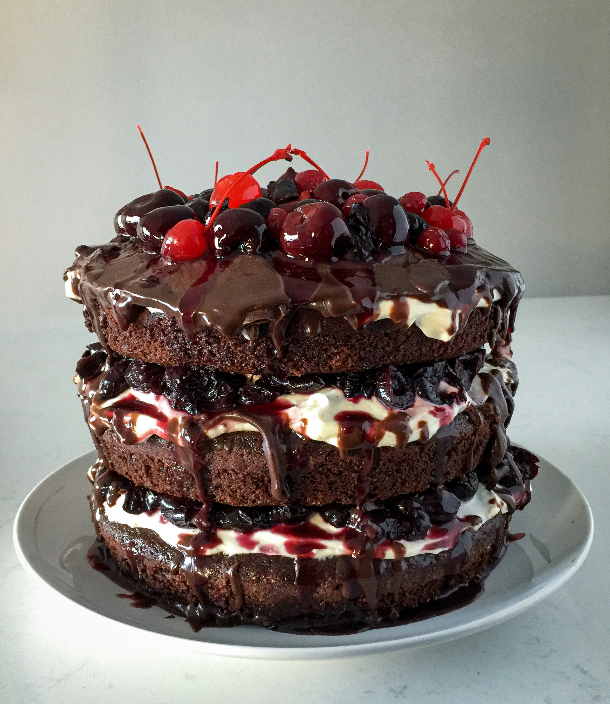

케이크는 유럽식 제과류의 일종이다.
밀가루, 계란, 우유, 설탕, 버터로 거품을 내거나 팽창제를 써서 만들며, 대개는 맛이 달고 식감이 부드럽다.
파운드케이크만 생각해도 그렇듯 상기한 재료와 방법으로 제조하면 다 케이크라고 할 수 있지만, 대한민국에서는 흔히 (지름이나 밑변이 높이보다 긴) 원기둥이나 육면체 베이스에 생크림이나 녹인 초콜릿 등으로 겉을 싸고 그 위에 각종 장식을 얹은 식품, 즉 데코레이션 케이크를 가리킨다.

흔히 생일이나 성탄절 같은 기념일에 축하하며 먹는 음식으로 나온다.